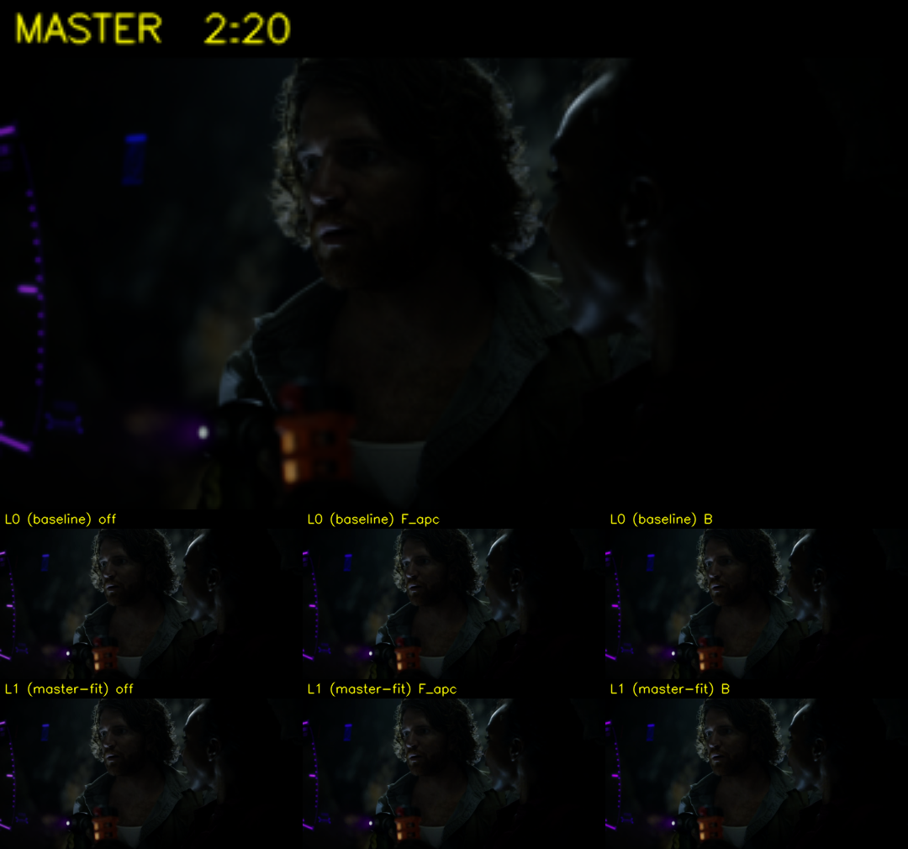
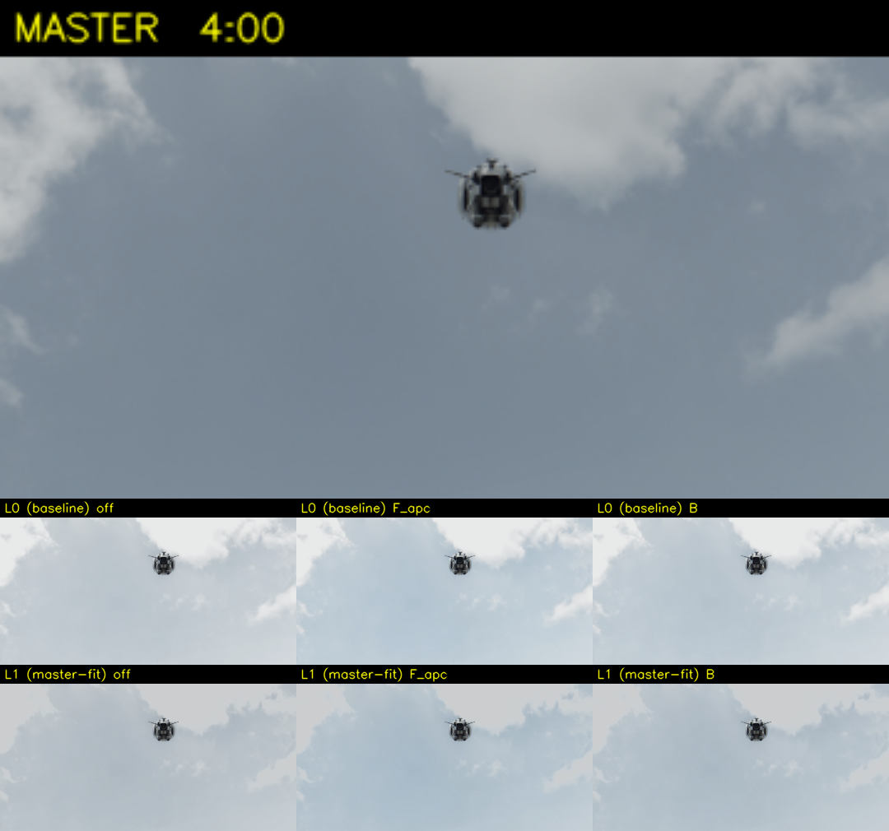
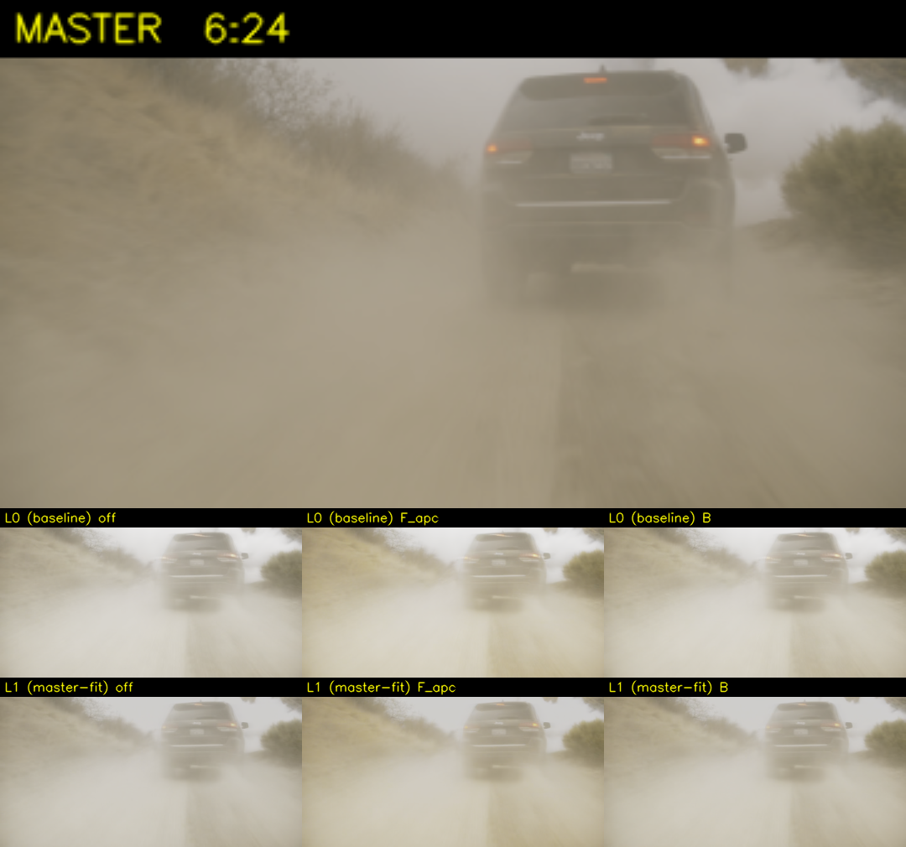
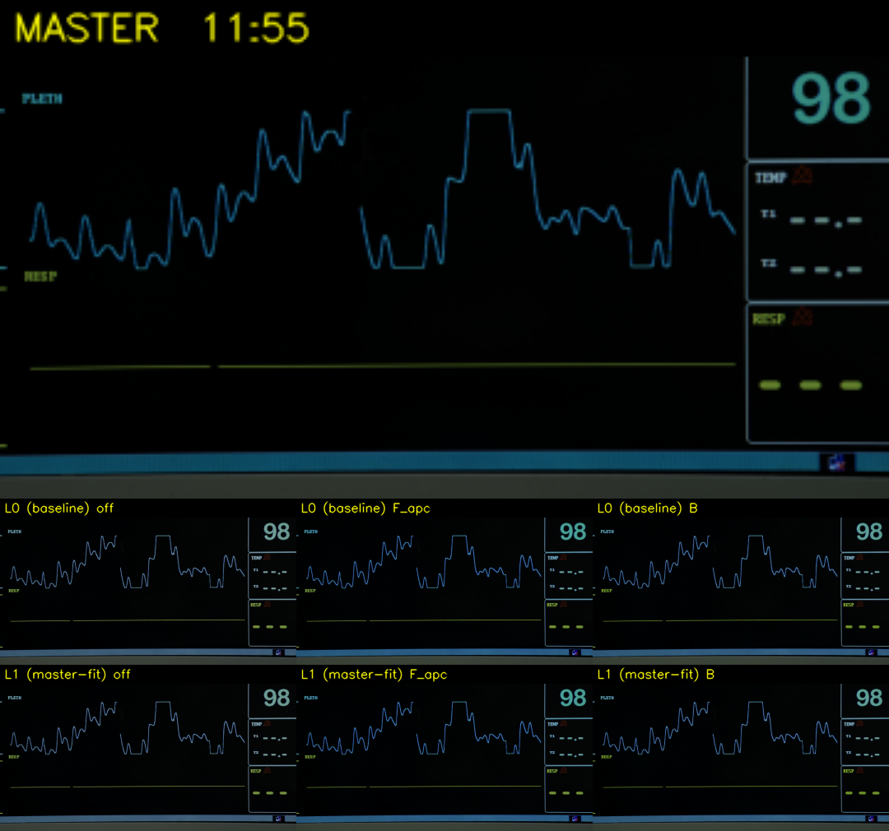

在 LTX gainmap 之上：
把色度和亮度也对齐到专业母版Beyond LTX gain map:
aligning chroma and luminance to a professional HDR master
LTX gainmap 把"哪里该亮"做对了，但它只解了 亮度 的一半问题——色度还在 SDR 的饱和度里，整体亮度也偏离了专业调色的意图。这篇复盘记录两件事：① 设计了一套自研自适应色度上变换（F_APC），在 7 路竞赛里拿到与全局法 B 相当的鲜艳，但更安全；② 把同片专业 HDR 母版当 ground truth，量化我们的 luma gainmap 过亮多少，并把亮度档校准到母版水平。最后把两个轴排成 2 亮度 × 3 色度全片矩阵，所有算法版本化保留、可追溯。LTX gain map solved "where to brighten", but only half of the brightness story—chroma is still stuck at SDR saturation, and the overall luminance drifts away from the colorist's intent. This retrospective covers two things: ① an in-house adaptive chroma boost (F_APC) that matched the global B path in a 7-way contest with stronger safety guarantees; ② using the professional HDR master of the same film as ground truth, quantifying how much the luma gain map overshoots, and recalibrating the luminance tier. Both axes were then run as a 2-luminance × 3-chroma full-film matrix, with every algorithm version preserved and traceable.
这一章要解决什么What this chapter sets out to solve
前一篇的 LTX gainmap 把 SDR 的亮度提到 HDR，但仔细看输出，两个问题留在了桌面上：The previous LTX gain map piece lifted the luminance of SDR into HDR, but a closer look at the result leaves two things on the table:
色度从未被增强Chroma was never boosted
现有管线 _convert_gamut 只是 容器映射 Rec.709→BT.2020：色度坐标不变、在更宽的色域里反而显得更"淡"。luma gain 对 RGB 按比例乘保色相、保相对饱和度——所以色度没动。HDR 给了宽色域，但"可用却完全没用"。In the current pipeline, _convert_gamut is just a container remap from Rec.709 to BT.2020: the chromaticity coordinates do not change, so colors look flatter inside the wider gamut. The luma gain multiplies RGB proportionally, preserving hue and relative saturation—chroma never moves. HDR offers a wide gamut, but it is available yet unused.
整体亮度偏离母版Overall luminance drifts from the master
同片有专业 HDR 调色母版（UHD / PQ 1000nits / BT.2020）。把母版当 ground truth 一比，我们的输出系统性过亮——尤其室外。"亮就是好"是错觉，调色师把高光留出空间才是真意图。A professional HDR master of the same film exists (UHD / PQ 1000nits / BT.2020). Comparing our output to that ground truth shows a systematic overshoot—especially outdoors. "Brighter is better" is an illusion; the colorist's actual intent is leaving headroom in the highlights.
两个轴要分开调，再组合Two axes, tuned independently, then combined
色度和亮度是独立的两件事。最终要给出"亮度档 × 色度档"的矩阵——让选型者横向比亮度、纵向比色度，每个算法版本化保留、可追溯。Chroma and luminance are two independent dials. The deliverable is a luminance tier × chroma method matrix, letting the decision-maker compare luminance horizontally and chroma vertically, with every algorithm versioned and traceable.
在动手之前要清楚的几件事A few things to be clear about before touching code
色度的"正确"空间：ICtCpThe right space for chroma: ICtCp
提色度不能直接在 RGB 上乘——会同时改亮度，且色相会漂。HDR/WCG 的标准选择是 ICtCp（Dolby 设计，BT.2100/BT.2124）：三轴中 I 是亮度（PQ 编码的 LMS 加权），Ct/Cp 是色度。只在 Ct/Cp 上做乘法，亮度近不变、色相近线性——这是它比 Oklab 在 HDR 域更稳的关键。You cannot boost chroma directly in RGB—it changes luminance and shifts hue. The standard HDR/WCG choice is ICtCp (Dolby, BT.2100 / BT.2124): the three axes are I (luminance, PQ-encoded LMS weighted sum) and Ct/Cp (chroma). Multiplying only Ct/Cp keeps luminance nearly fixed and hue nearly linear—this is why it is more stable than Oklab in the HDR domain.
Hunt 效应：越亮越要更艳The Hunt effect: brighter wants more chroma
人眼感知里，物体越亮，看着越鲜艳——这是 Hunt 效应。SDR→HDR 把整体提亮后，如果不同步提色度，画面就会"亮但发灰、发淡"。这是"该提色度"的感知学依据，不是审美偏好。Perceptually, brighter objects look more colorful—this is the Hunt effect. After lifting SDR luminance into HDR, chroma must follow, or the image looks "bright but desaturated". The chroma push is rooted in vision science, not aesthetic preference.
PQ 是绝对亮度坐标PQ is an absolute luminance coordinate
SDR 的"白"是相对的（参考白≈100 nit），HDR PQ（ST 2084）把每个码值钉在绝对 nit 上：码 0.508 ≈ 100 nit，0.580 ≈ 203 nit（BT.2408 漫反射白），1.0 = 10000 nit。对比我们和母版的"亮"，必须落到绝对 nit——否则不同曝光算法的码值没有可比性。In SDR, "white" is relative (≈100 nit reference). In HDR PQ (ST 2084), every code value is pinned to an absolute nit: 0.508 ≈ 100 nit, 0.580 ≈ 203 nit (BT.2408 diffuse white), 1.0 = 10000 nit. Any "is it too bright?" comparison must drop to absolute nits—otherwise code values from different exposure choices are not comparable.
色域余量：物理可推的边界Gamut headroom: the physical boundary of how far you can push
每个像素在 BT.2020 三角内都有"剩余距离"——再推一点饱和度就会撞色域边、被截断、色相漂掉。逐像素算这个余量，按余量分配推幅，是"永不截断 + 零色相漂移"的物理保证。这条是自研算法的核心新颖点。Each pixel has a remaining distance inside the BT.2020 triangle—push saturation further and it hits the gamut boundary, gets clipped, and shifts hue. Computing this per-pixel headroom and allocating the boost by remaining room is the physical guarantee of "no clipping + zero hue drift", and is the core novelty of the in-house algorithm.
把"提多少饱和度"做成一场竞赛Turning "how much saturation" into a contest
不预设答案——把候选路线列齐，在同一段素材上跑客观指标，再用人眼复核。共 7 条路：基线、LTX 当色度先知、ICtCp / Oklab 全局乘、Hunt 亮度耦合、色域径向拉伸、自研 F_APC。No baked-in answer. Line up every candidate, run them all on the same clip with objective metrics, then verify by eye. Seven paths in total: baseline, LTX as chroma oracle, global ICtCp / Oklab, Hunt luma coupling, gamut radial stretch, and the in-house F_APC.
| 编号ID | 路线Route | 核心思想Core idea |
|---|---|---|
| 0 | baseline | 不动色度leave chroma untouched |
| A | LTX 色度先知 | 仿 luma gainmap，从 LTX EXR 提色度增益mirror the luma gain map idea, extract chroma gain from the LTX EXR |
| B | ICtCp 全局 | ICtCp 域 Ct/Cp ×= factor，全局一刀切in ICtCp, Ct/Cp ×= factor globally |
| C | Oklab 全局 | 同 B 但换 Oklab 域作对照same as B but in Oklab, as a control |
| D | Hunt 亮度耦合 | 按输出亮度档位决定提多少色度scale chroma boost by output luminance |
| E | 色域径向拉伸 | 朝色域边界径向推radial push toward the gamut boundary |
| F | F_APC（自研） | 逐像素自适应：用 5 个 ≤1 的乘性门控决定每个像素该提多少per-pixel adaptive: five multiplicative gates, each ≤1, decide how much to push at each pixel |
自研 F_APC（Adaptive Perceptual Chroma）的设计Designing F_APC (Adaptive Perceptual Chroma)
固定 factor 的方法（如 B）对所有像素一视同仁，要"既敢推暗场、又不推爆人脸/已饱和处"是做不到的——单一全局值必须按最坏场景保守设。F_APC 换一个方向：每个像素自己决定该提多少。A fixed-factor method (like B) treats every pixel the same and cannot simultaneously push dark scenes hard yet hold back on faces or already-saturated areas—a single global value must be set conservatively for the worst case. F_APC turns this around: each pixel decides its own boost.
Whero · 主角色· hero color
Rayleigh 钟形门控：在中等饱和度（c₀≈0.12）处取最大，避开近灰噪点和已饱和处。Rayleigh-shaped gate peaking at mid saturation (c₀≈0.12), avoiding near-neutral noise and already-saturated pixels.
Whunt · 亮度耦合· Hunt coupling
输出亮度 0→1，权重从 0.5 升到 1.0（暗部留 50% 底，中高调全量）。把推力集中到亮处。As luminance goes 0→1, weight rises from 0.5 to 1.0 (50% floor in shadows, full weight in midtones and highlights). Push concentrates where it counts.
Wgamut · 色域余量（新颖项）· gamut headroom (novel)
逐像素算"再放大多少才贴色域边"，按余量分配推力。这是不截断、不漂色相的物理保证。Per-pixel: how much can this color scale before hitting the gamut boundary. Allocate boost by remaining room. This is the physical guarantee of no clipping and zero hue drift.
Whl · 高光 rolloff· highlight rolloff
接近峰值亮度时减弱推力，防霓虹化、防截断。Soften the push near peak luminance, preventing neon edges and clipping.
Wskin · 护肤· skin protection
ICtCp 肤色扇区（中心 1.866 rad，用真人脸像素实测定的，不是猜的）软抑制提幅。A soft cap in the ICtCp skin sector (center 1.866 rad, measured from real face pixels, not guessed).
用专业母版当 ground truth 校准亮度Calibrate luminance against the professional master as ground truth
"我们过亮"是肉眼直觉，要变成可调的旋钮，得先把它量化。专业 HDR 母版（UHD / PQ / 1000nits / Rec.2020，与 SDR 帧对齐已核验）正是缺失的 ground truth。"We are too bright" is a gut call. To translate it into a tunable knob, it has to be quantified. The professional HDR master (UHD / PQ / 1000 nits / Rec.2020, frame-aligned with the SDR source) is exactly the missing ground truth.
指标：绝对 nit，p50/p90/p99Metric: absolute nits at p50 / p90 / p99
两路视频都按 PQ→线性→BT.2020 亮度（kr,kg,kb=0.2627,0.6780,0.0593）算绝对 nit，再取分位数：p50 看暗部 / 漫反射白，p90 看亮部走向，p99 看高光峰值，max 看截断。挑了室外越野车扬尘镜头（t=384s，clip 见 §06）做测量样本，这正是"我们过亮"最容易暴露的内容。Both videos go PQ → linear → BT.2020 luminance (kr,kg,kb = 0.2627, 0.6780, 0.0593) for absolute nits, then aggregate by percentile: p50 for shadows / diffuse white, p90 for the bright trend, p99 for highlight peaks, max for clipping. We picked the outdoor SUV-and-dust shot at t = 384s as the measurement sample—the kind of content where overshoot is most visible.
| 变体Variant | nitsmean | nits50 | nits90 | nits99 | nitsmax | >203nit % |
|---|---|---|---|---|---|---|
| 母版 ✦Master ✦ | 77 | 27 | 252 | 371 | 857 | 14% |
| L0 (0.9 / 4.5) strength / max-output-luma | 199 (2.6×) | 43 | 884 (3.5×) | 890 | 988 | 26% |
| L1a (0.8 / 3.0) | 155 | 43 | 592 | 594 | 676 | 26% |
| L1b (0.7 / 2.4) | 134 | 43 | 474 | 476 | 548 | 25% |
| L1 (0.6 / 1.6) ← 采用adopted | 105 (1.36×) | 42 | 317 (1.26×) | 319 | 383 | 25% |
扫了 3 个 L1 候选，L1 = 0.6 / 1.6 把高光从 884 nit 压到 317 nit（≈母版），均值降到 1.36×，视觉无崩坏（阴影完整、扬尘自然，详见 §06 montage）。亮度档定：Three L1 candidates were swept. L1 = 0.6 / 1.6 brings the highlights from 884 nit down to 317 nit (close to the master), with mean overshoot reduced to 1.36×, and no visible breakage (shadows intact, dust naturally rendered—see montage in §06). The two tiers are fixed as:
L0 (现状档current tier) · 0.9 / 4.5
保留"亮就是 HDR"的早期管线，作为过亮基线。需要更激进 HDR 感的素材可用。Keeps the early "HDR means bright" pipeline as the overshoot baseline. Usable for content that wants a more aggressive HDR feel.
L1 (贴母版档master-fit tier) · 0.6 / 1.6 ✦
对齐专业调色意图。室外亮部≈母版，电影感更稳。是默认建议的生产档。Aligned with the colorist's intent. Outdoor highlights match the master; the look is more cinematic. The recommended production default.
注入点、流水线、矩阵模式Injection point, pipeline, matrix mode
色度注入点：BT.2020 线性域，gamut 后、PQ 前Where to inject chroma: BT.2020 linear, after gamut, before PQ
现有 linear_to_hdr10_yuv420p10le = sRGB linear → BT.2020 linear → grade → PQ → YUV。色度增强必须在 BT.2020 线性域注入（ICtCp 的输入正是这里），加了 rec2020_linear_to_hdr10_yuv420p10le 把后半段独立暴露，逐位与原路径等价。The existing linear_to_hdr10_yuv420p10le goes sRGB linear → BT.2020 linear → grade → PQ → YUV. Chroma boost has to enter in the BT.2020 linear stage (the canonical ICtCp input). A new rec2020_linear_to_hdr10_yuv420p10le exposes the second half of that path, bit-equivalent to the original when no chroma method is applied.
接入生产：--chroma-methods off,F_apc,BProduction hook: --chroma-methods off,F_apc,B
给 src/ltx_exr_gainmap_tool.py 加一个开关：一次增益计算 → rec2020 基底 → 对每个选中的色度方法各自编码。off 路径与原基线逐位等价，这是必须的——否则基线就漂了。A single switch added to src/ltx_exr_gainmap_tool.py: one gain pass → rec2020 base → encode each requested chroma method independently. The off path is bit-equivalent to the existing baseline, which is mandatory—otherwise the baseline itself drifts.
# 三档色度,off 与生产基线逐位等价 _CHROMA_FUNCS = { "off": lambda rec: rec, "F_apc": lambda rec: path_apc(rec, dmax=1.0), # 自研逐像素 "B": lambda rec: path_ictcp(rec, factor=1.3),# 拐点(详见 §06) }
流水线 · 矩阵模式 · 算完即删 EXRPipeline · matrix mode · delete EXR as we go
全片 LTX EXR 约 125 GB，磁盘放不下。所以 h20_pipeline_runner.py 是按镜头消费即删：GPU 池产 LTX 子段，每个镜头一旦凑齐子段就交给 CPU 池做 gainmap + 色度，然后立即删该镜头的 EXR。在它上面加矩阵模式：A full-film LTX EXR run is about 125 GB, which does not fit on disk. So h20_pipeline_runner.py consumes per shot and deletes immediately: the GPU pool produces LTX sub-segments; once a shot is complete its sub-segments are handed to the CPU pool for gain map + chroma, then the EXR for that shot is removed. Matrix mode sits on top:
venv/bin/python h20_pipeline_runner.py \ --input data/input/<sdr>.mp4 --run-name ff_matrix \ --output output/fullfilm_matrix/fullfilm \ --width 1536 --height 864 --segment-frames 81 \ --ports 8188,8189,8190,8191 \ --lum-variants L0:0.9:4.5,L1:0.6:1.6 \ # 2 亮度档 --matrix-chroma off,F_apc,B # 3 色度档
消融实验:每个门控都不可删Ablation: every gate is load-bearing
逐个把 F_APC 的 5 个门控置 1,看 full→no_X 揭示该项原本在抑制什么(对 baseline 提升,clip1 室内 / clip2 暗夜):Turn off each gate one at a time and read what artifact appears (relative gains over baseline, on clip1 indoor / clip2 dark-night):
| 变体Variant | 均值色度 ↑mean chroma ↑ | p99 ↑ | 肤色 ↑skin ↑ | 色相°hue° | 截断 %clip % |
|---|---|---|---|---|---|
| full · F_APC | +19 / +30 | +12 / +33 | +15 / +17 | .07 / .00 | .041 / .000 |
| no_hero | +26 / +43 | +15 / +34 | +21 / +23 | .11 / .00 | .052 / .000 |
| no_hunt | +35 / +58 | +19 / +61 | +30 / +34 | .39 / .02 | .055 / .000 |
| no_gamut | +33 / +33 | +35 / +40 | +24 / +20 | .72 / .04 | .048 / .000 |
| no_hl | +19 / +30 | +12 / +33 | +15 / +18 | .07 / .00 | .048 / .000 |
| no_skin | +21 / +32 | +14 / +40 | +24 / +35 | .07 / .00 | .041 / .000 |
读法:full 是所有变体里最克制的,因为 5 个 ≤1 门控相乘约束叠加。去掉任一项都涨饱和度,但同时冒出对应类型伪影:去 gamut → 色相漂移 0.07°→0.72°;去 hunt → 暗部和肤色被同步推爆;去 skin → 肤色 +17%→+35% 翻倍;去 hero → 近灰区噪声被无差别推;去 hl → 高光截断略升。证明 F_APC 不是堆砌,每个部件都各司其职、不可删。How to read this: full is the most restrained of all variants, because the five ≤1 gates compose multiplicatively. Disabling any of them raises saturation but introduces the corresponding artifact: drop Wgamut and hue drift jumps from 0.07° to 0.72°; drop Whunt and shadows / skin get pushed indiscriminately; drop Wskin and skin saturation almost doubles (+17 → +35%); drop Whero and near-neutral noise gets boosted; drop Whl and highlight clipping nudges up. F_APC is not a feature pile-up—each gate is load-bearing.
对母版的去亮度对标 + 全片矩阵Luminance-normalized chroma alignment to the master · full-film matrix
客观指标(对母版)Objective metrics vs master
注意亮度混淆:我们的输出比母版亮 18~22%(I 值高),而 ICtCp 色度会随亮度涨——必须用去亮度饱和度 sat = chroma / I来比,才公平。Beware the brightness confound: our outputs are 18–22% brighter than the master (I value), and ICtCp chroma scales with luminance—so the fair comparison uses luminance-normalized saturation sat = chroma / I.
| 占 GT %% of GT | baseline (off) | D Hunt | F_APC | B ICtCp | 母版Master |
|---|---|---|---|---|---|
| sat clip1 室内 / indoor | 88% | 96% | 102% | 106% | 100% |
| sat clip2 暗夜 / dark | 90% | 99% | 114% | 112% | 100% |
| p99 chroma clip1 | 80% | 92% | 88% | 99% | 100% |
| p99 chroma clip2 | 88% | 97% | 115% | 109% | 100% |
① 项目前提被证实:luma-only 的 baseline 比专业调色欠饱和 10~12%。色度上变换不是无中生有,而是补回母版水平。
② F_APC 最贴专业调色意图(102~114%),B 略超(106~112%),D 略欠(96~99%)。
③ 各方法都把肤色推得比母版略高,提色度时护肤是真问题——F_APC/B 在人脸场可再收紧,母版肤色更克制。Three conclusions validated by external data:
① The project premise is confirmed: the luma-only baseline is 10–12% undersaturated versus the colorist's intent. Chroma upconversion is not inventing color; it is restoring the master's level.
② F_APC tracks the master closest (102–114%); B overshoots slightly (106–112%); D undershoots slightly (96–99%).
③ Every method pushes skin slightly above the master's level. Skin protection is a real concern when boosting chroma—F_APC and B can still be tightened on faces; the master is more restrained.
A 路 LTX 当色度先知 · 为什么无效Path A · why "LTX as chroma oracle" fails
A 路仿 luma gainmap 的思路,试图从 LTX EXR 抽出色度增益。实测同像素对比(20 帧抽样,Oklab 域,对"有色像素"统计):Path A mirrors the luma gain map idea, trying to extract chroma gain from the LTX EXR. Same-pixel comparison (20 frames sampled, Oklab, restricted to "colored" pixels):
- 仅 32% 像素 LTX 比 SDR 更艳;c_ltx / c_sdr 中位 0.85~0.91 → LTX 普遍比 SDR 欠饱和。Only 32% of pixels have LTX more saturated than SDR; median c_ltx/c_sdr is 0.85–0.91—LTX is generally less saturated.
- LTX vs SDR 色相分歧均值 ~20°(p90 38~53°)。即便方向上可参考也会幻想错色。LTX vs SDR hue divergence averages ~20° (p90 38–53°). Even directionally, it would push toward the wrong colors.
全片 2 × 3 矩阵 · 关键时间码并排Full-film 2 × 3 matrix · side-by-side at key timecodes
最终交付:2 亮度档 × 3 色度档 = 6 个全片 HDR10(1536 × 864,fp32,~5min/段 LTX × 374 段,总跑 25 小时)。每张 montage 顶行=母版,中行=L0(现状亮度),底行=L1(贴母版亮度)。映射:固定 Reinhard@200nit,所有图块同一映射,让亮度差异看得见。Deliverable: 2 luminance tiers × 3 chroma methods = 6 full-film HDR10 outputs (1536 × 864, fp32, ~5 min/segment LTX × 374 segments, 25 hours total). Each montage row: top = master, middle = L0 (current luminance), bottom = L1 (master-fit). Tonemap: fixed Reinhard @ 200 nit—same mapping for every tile, so the brightness gap remains visible.




怎么接入生产How this lands in production
"6 个全片"是选型工具,不是产品形态。选定算法后接入生产的方式:The "6 full films" are a selection tool, not a product. Once an algorithm is chosen, this is how it lands in production:
--gain-off-from。片尾字幕保持 SDR 亮度,不被推成 HDR 高光。Reuse the existing --gain-off-from. Tail credits stay at SDR brightness instead of becoming HDR highlights.可追溯的算法注册表A traceable algorithm registry
每个被加入选型的算法都用命名固定下来(代码 / 参数 / 测试输出三位一体),不被覆盖。当周一选定一个算法后,其他保留,后续可回头复用或对照新算法。Every algorithm in the selection set has a frozen name binding code + parameters + test output. Nothing gets overwritten. After Monday picks one, the others stay—available for later reuse or comparison against new algorithms.
| ID | 参数Parameters | 代码位置Code |
|---|---|---|
| L0 / L1 | strength=0.9, max-output-luma=4.5 / 0.6, 1.6 | exr_default_config() in src/ltx_gainmap.py |
| off | 无色度操作no chroma op | 直通生产基线passthrough = production baseline |
| F_apc | dmax=1.0, skin=True, SKIN_PROTECT=0.25 | path_apc() in src/color/chroma_upconv.py |
| B | factor=1.3 (扫描得到的过饱和拐点measured oversaturation knee) | path_ictcp() in src/color/chroma_upconv.py |
这两天的实验教会的三件事Three lessons from these two days
没有 ground truth 别瞎调Do not tune without ground truth
"我们过亮"是肉眼直觉,直到拿到母版才变成 3.5×这种可调旋钮。专业母版+绝对 nit 让"调多少"从直觉降级到工程数。"We are too bright" is a hunch—until the master turns it into a measurable 3.5×. A professional reference plus absolute nits demotes "how much" from gut feel to engineering.
"安全的鲜艳"是工程问题"Safe vivid" is an engineering problem
F_APC 的逐像素门控乘积写法,让每个安全约束(护肤 / 防截断 / 保色相 / 聚焦主角色)都可独立证明。消融实验是对"每个部件都有用"的硬支撑。F_APC's product-of-gates form makes every safety constraint (skin / clipping / hue / hero-color focus) independently provable. The ablation is hard evidence that every component pulls weight.
选型不是替换 · 而是版本化Selection is versioning, not replacement
把 2 亮度 × 3 色度都跑全,每条都用命名固定。审片决定的是默认档,不是唯一档。这套做法也适合后面再加 AI 路(HDRTVNet++ / GM-Diffusion)对比。Run all 2 × 3 combinations and pin every one by name. Review picks the default tier, not the only one. The same setup is ready for adding future AI variants (HDRTVNet++, GM-Diffusion) into the same matrix.
参考与延伸References & further reading
- ITU-R BT.2100 — HDR-TV image parameter values for production and international programme exchange
- ITU-R BT.2124 — Objective metric for the assessment of the potential visibility of colour differences in television (ΔEITP)
- ITU-R BT.2408 — Guidance for operational practices in HDR television production (diffuse white at 203 nits)
- Dolby ICtCp white paper — Hue-linear chroma space for HDR/WCG
- SMPTE ST 2084 (PQ) — Perceptual Quantizer EOTF
- Björn Ottosson · Oklab — Perceptual color space, used as the C path control
- HDRTVNet++ (arXiv 2309.04084) — Reference end-to-end CNN SDR→HDR (planned as F_AI path, see next iteration)
- 项目内文档:
CHROMA_RESEARCH.md· §6.4 最终结论 · §6.5 对母版对标 · §6.2.5 F_APC 消融In-project doc:CHROMA_RESEARCH.md· §6.4 final conclusion · §6.5 master alignment · §6.2.5 F_APC ablation
所有指标基于 2 个测试镜头(室内人脸 + 暗夜)+ 1 个室外样段,抽样 20 帧/镜头,聚合统计。最终选型仍以 HDR 屏肉眼为准。All metrics come from 2 test shots (indoor face + dark night) plus 1 outdoor sample, 20 sampled frames per shot, aggregated. Final selection is still made by eye on an HDR display.